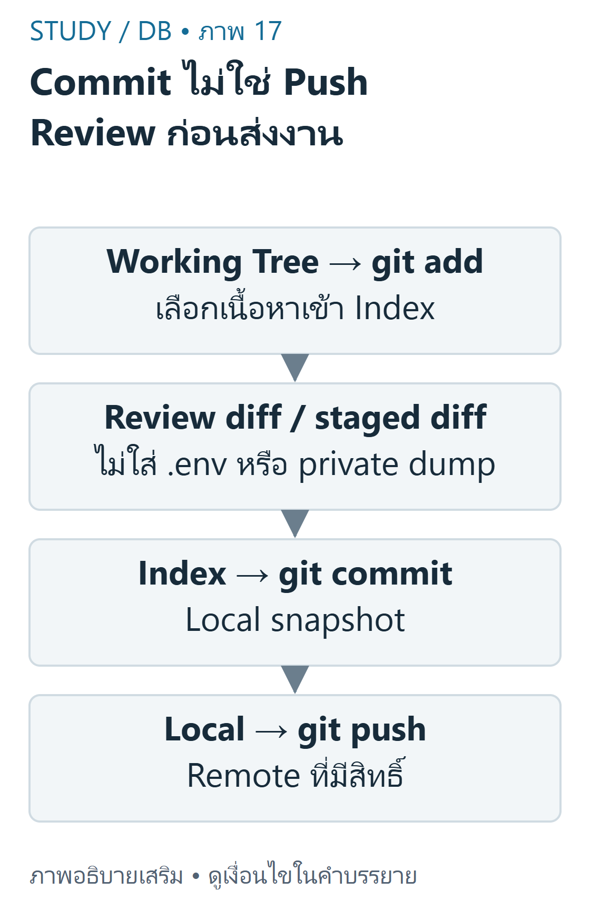
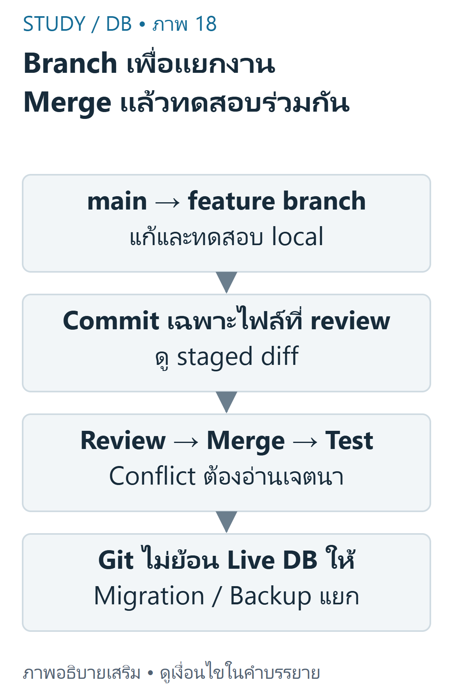

DB 09 — Git GitHub และการทำงานร่วมกัน ขอบเขตจากDB-S01หน้า22–34,36และDB-S03หน้า19–28 คำสั่งเป็นตัวอย่างlocalที่ตรวจในrepositoryชั่วคราว ไม่ได้pushงานส่วนตัวขึ้นremote
เป้าหมายการเรียนรู้ แยกGitจากGitHub และworkingtree/staging/commitจากremote ทำbranch/mergeและreviewdiffก่อนcommitอย่างมีเหตุผล เก็บschema/migration/READMEโดยไม่เก็บsecretหรือข้อมูลผู้ใช้ Gitและสามสถานะ Gitเป็นระบบควบคุมเวอร์ชันแบบกระจาย ส่วนGitHubเป็นบริการhosting/collaborationที่ใช้Git Commitบันทึกsnapshotที่อยู่ในstagingในlocalrepository ไม่ได้ส่งขึ้นGitHubโดยอัตโนมัติ และไม่ได้สำรองข้อมูลMySQLที่กำลังเปลี่ยนอยู่

ภาพเขียนเสริม: Commit ไม่ใช่ Push Review ก่อนส่งงาน — ห้าม stage secret หรือ private dumpภาพเขียนเสริม ตรวจตามบทเรียนและเอกสารเทคนิค อ่านภาพ: Working Tree คือไฟล์ที่แก้ Indexคือ snapshotที่stage Commitบันทึก localhistory แล้ว Pushจึงส่งremote Gitไม่backupMySQLสดและไม่deployPHPให้อัตโนมัติ
Bash คัดลอกโค้ด
1 git status --short 2 git diff -- database/schema.sql 3 git add database/schema.sql README.md 4 git diff --cached 5 git commit -m "Add reviewed skill schema" Working Treeคือไฟล์ที่กำลังแก้ Staging/Indexคือสิ่งที่เลือกสำหรับcommitถัดไป Repositoryเก็บcommits ถ้าgit addแล้วแก้ไฟล์ต่อ commitจะยังใช้versionที่stageไว้จนstageใหม่ อย่าgit add .โดยไม่reviewในโครงการที่อาจมี.env
ตัวอย่างพื้นฐาน: แก้READMEและstageเฉพาะREADME commitนั้นไม่รวมไฟล์PHPที่ยังunstaged ตัวอย่างท้าทาย: แก้schemaหลังstageแล้วให้git diffเห็นworking-indexและgit diff --cachedเห็นindex-HEADก่อนตัดสินใจ
BranchและMerge Branchเป็นreferenceที่เลื่อนไปตามcommit ไม่ใช่สำเนาฐานข้อมูลสด การเปลี่ยนbranchไม่ย้อนข้อมูลMySQLโดยอัตโนมัติ ใช้migrationและbackupตามกระบวนการที่ทดสอบแยก

ภาพเขียนเสริม: Branch เพื่อแยกงาน Merge แล้วทดสอบร่วมกัน — Fast-forward อาจไม่มี merge commit ใหม่ภาพเขียนเสริม ตรวจตามบทเรียนและเอกสารเทคนิค อ่านภาพ: Branchเป็นreferenceในcodehistory ไม่ใช่สำเนาDBสด Reviewความหมายเมื่อconflictและทดสอบหลังmerge .gitignoreไม่ลบsecretที่เคยtrackedหรือrotatepasswordให้
Bash คัดลอกโค้ด
1 git switch -c feature/skill-list 2 # แก้และทดสอบไฟล์ในเครื่อง 3 git add skill-list.php 4 git diff --cached 5 git commit -m "Show owner-scoped skills" 6 git switch main 7 git merge feature/skill-list ถ้าไม่มีการแตกประวัติmergeอาจfast-forwardโดยไม่สร้างmergecommit ถ้าแก้บรรทัดเดียวกันอาจconflict ต้องอ่านเจตนาของทั้งสองฝ่าย ลบmarkerให้ถูก ทดสอบก่อนcommit ไม่สุ่มเลือกours/theirsเพียงเพราะคำสั่งผ่าน
RemoteและการReview Cloneสร้างlocalrepositoryจากremote Fetchนำobjects/refsมาโดยไม่บังคับmergeเข้าbranchปัจจุบัน Pullโดยทั่วไปfetchแล้วintegrateตามconfiguration ส่วนPushส่งcommits/refsไปremoteที่มีสิทธิ์ PullRequestเป็นคำขอreviewบนplatform ไม่ใช่คำสั่งGitที่mergeให้อัตโนมัติ
Bash คัดลอกโค้ด
1 git clone https://github.com/example/learning-demo.git 2 # URLนี้เป็นรูปแบบตัวอย่าง ไม่ใช่repositoryที่รับรองว่ามีจริง 3 git remote -v 4 git fetch origin 5 git log --oneline --decorate -5 ก่อนpushให้ตรวจremoteและbranchจริงพร้อมสิทธิ์และขอบเขต หลีกเลี่ยงforcepushบนงานร่วมกันในบทนี้ การสาธิตlocalไม่อ้างว่าได้ส่งPRหรือdeployAngsilaแล้ว
ป้องกันSecret .gitignoreช่วยกันuntrackedfilesเข้าstageโดยไม่ตั้งใจ แต่ไม่ลบไฟล์ที่เคยtracked ไม่ลบข้อมูลจากประวัติ และไม่เพิกถอนpasswordที่รั่ว หากsecretถูกเผยแพร่ต้องrotate/revokeและประสานผู้ดูแลก่อนจัดการประวัติอย่างได้รับอนุญาต
.env
.env.*
*.log
/uploads/
/vendor/นี่คือตัวอย่างpolicyที่ต้องปรับตามโครงการ ไม่ควรignoreทุกSQLเพราะschema/migrationที่reviewแล้วควรversioned ขณะเดียวกันbackupSQLที่มีข้อมูลส่วนตัวไม่ควรpublic ตัวอย่าง.env.exampleถ้าจะใช้ต้องมีเพียงชื่อkey/placeholderที่ไม่ใช่ค่าจริง
ร่วมทำDatabase Project READMEควรบอกวิธีตั้งค่าruntime/schema/seedแบบข้อมูลจำลอง วิธีรันทดสอบและข้อจำกัด ไม่ใส่passwordจริง แยกmigrationที่reviewได้จากdumpจริงที่มีข้อมูลส่วนตัว และตรวจSQLก่อนรันเสมอ
SQL คัดลอกโค้ด
1 CREATE TABLE skill ( 2 id INT AUTO_INCREMENT PRIMARY KEY, 3 profile_id INT NOT NULL, 4 skill_name VARCHAR(120) NOT NULL, 5 skill_level VARCHAR(40) NULL, 6 FOREIGN KEY (profile_id) REFERENCES profile(id) 7 ); ตัวอย่างschemaเสริมต้องใช้บนdatabaseทดสอบที่มีprofileตรงชนิด/FKอยู่แล้ว ไม่ใช่คำสั่งให้รันซ้ำบนระบบจริง การเพิ่มคอลัมน์/เปลี่ยนconstraintอาจกระทบข้อมูลเดิม ต้องมีแผนmigration/backout/backupที่เหมาะสม Gitไม่ทำสิ่งนี้ให้เอง
PHP คัดลอกโค้ด
1 <?php 2 // เรียกหลังเปิดconnectionและตรวจsession; ตัวอย่างการเรียก helperในDB03 3 $rows = \StudyDatabase\skills($conn, $sessionProfileId); 4 echo '<p>พบ ' . count($rows) . ' ทักษะ</p>'; ผลกับfixtureprofile1ที่มีสามskillsคือพบ3ทักษะ ต้องreviewทั้งschemaและPHPที่อ่านfieldดังกล่าวร่วมกัน เมื่อmergeผ่านแล้วยังต้องทดสอบใหม่ GitHubPagesรันHTML/CSS/JSได้แต่ไม่รันPHP/MySQL; การhostingPHPต้องใช้serverที่รองรับและได้รับอนุญาต
ข้อผิดพลาดและแบบฝึก ข้อ1: Commitแล้วเพื่อนเห็นทันทีหรือไม่? เฉลย: ไม่ เป็นlocalจนpushไปremoteที่เพื่อนเข้าถึงได้ข้อ2: เพิ่ม.envใน.gitignoreแก้passwordรั่วแล้วหรือไม่? เฉลย: ไม่ ไฟล์tracked/historyยังอยู่และต้องrotateข้อ3: switchbranchย้อนschemaDBหรือไม่? เฉลย: ไม่ ต้องจัดmigrationแยกสรุปทบทวน Review workingdiffและstageddiffแยกกัน Commit≠Push≠Deploy ใช้branch/PRเพื่อreview ไม่ใช้GitแทนการควบคุมDBmigration Versionโค้ด/schemaที่reviewแล้ว ไม่เผยแพร่secretหรือข้อมูลผู้ใช้ เนื้อหาฝึกเขียนและเฉลยต่อไปนี้เรียบเรียงเพื่อการเรียน ไม่ใช่ข้อสอบจริงหรือเฉลยทางการของผู้สอน เว็บไซต์นี้แสดงตัวอย่างแบบ static; ไม่ส่ง SQL, PHP หรือข้อมูลบัญชีไปรันบนเซิร์ฟเวอร์มหาวิทยาลัย
แหล่งข้อมูลและขอบเขต DB-S01 หน้า22–34,36; DB-S03 หน้า19–28. อ้างอิงเสริม Git basics , gitignore , git-pull , GitHub Pages .
บัญชีแหล่งข้อมูลและข้อจำกัด ระบุเลขหน้ากายภาพของ PDF ทุกครั้ง เอกสารต้นฉบับที่ผู้ใช้ให้เป็นไฟล์ local-only และไม่ได้เผยแพร่ซ้ำ ภาพและโจทย์ฝึกเป็นงานเขียนเสริมที่แยกจากต้นฉบับ
โหมดฝึกทำโจทย์ โจทย์ฝึกที่ผู้เขียนจัดทำ ไม่ใช่ข้อสอบจริงหรือเฉลยทางการ; การประเมินตนเองไม่รวมในคะแนนอัตโนมัติ
โจทย์ฝึกที่ผู้เขียนจัดทำ ไม่ใช่ข้อสอบจริง: GitกับGitHubต่างกันอย่างไร? A. ทั้งคู่คือMySQLengine B. Gitเป็นVCS GitHubเป็นhosting/collaborationservice C. GitคือPHPframework D. GitHubจำเป็นต่อทุกlocalcommit ทบทวนเนื้อหาที่เกี่ยวข้อง อ่านเฉลยและแนวประเมิน Gitเป็นVCS GitHubเป็นhosting/collaborationservice
Gitทำlocalhistoryได้โดยไม่ใช้GitHub
โจทย์ฝึกที่ผู้เขียนจัดทำ ไม่ใช่ข้อสอบจริง: gitaddทำอะไร? A. pushขึ้นremoteทันที B. deployPHPทันที C. เลือกเนื้อหาเข้าIndexสำหรับcommitถัดไป D. backupMySQLทุกtable ทบทวนเนื้อหาที่เกี่ยวข้อง อ่านเฉลยและแนวประเมิน เลือกเนื้อหาเข้าIndexสำหรับcommitถัดไป
stageไม่เท่ากับcommit/push/deploy
โจทย์ฝึกที่ผู้เขียนจัดทำ ไม่ใช่ข้อสอบจริง: stageREADMEแล้วแก้READMEอีกโดยไม่addใหม่ commitจะใช้ส่วนใด? A. workingversionใหม่ทั้งหมดเสมอ B. remoteversionเสมอ C. ไม่มีไฟล์ใดcommitได้ D. snapshotที่stageไว้ ทบทวนเนื้อหาที่เกี่ยวข้อง อ่านเฉลยและแนวประเมิน snapshotที่stageไว้
Indexเก็บสิ่งที่เลือก;แก้workingtreeต่อไม่updateIndexเอง
โจทย์ฝึกที่ผู้เขียนจัดทำ ไม่ใช่ข้อสอบจริง: .gitignoreป้องกัน.envที่เคยtrackedแล้วอย่างไร? A. ไม่ยกเลิกtrackingหรือhistoryเอง B. ลบsecretจากทุกcloneทันที C. rotatepasswordให้อัตโนมัติ D. เข้ารหัสcommitเก่า ทบทวนเนื้อหาที่เกี่ยวข้อง อ่านเฉลยและแนวประเมิน ไม่ยกเลิกtrackingหรือhistoryเอง
ต้องจัดtrackingและsecretrotationอย่างได้รับอนุญาต
โจทย์ฝึกที่ผู้เขียนจัดทำ ไม่ใช่ข้อสอบจริง: Commitที่localโดยไม่push เพื่อนบนGitHubเห็นแล้วหรือไม่? A. เห็นทันทีทุกกรณี B. ยังไม่ C. เห็นถ้าใช้Dark D. เห็นเมื่อCSSโหลด ทบทวนเนื้อหาที่เกี่ยวข้อง อ่านเฉลยและแนวประเมิน ยังไม่
localhistoryยังไม่เผยแพร่ไปremote
โจทย์ฝึกที่ผู้เขียนจัดทำ ไม่ใช่ข้อสอบจริง: อธิบายworking/index/commitเมื่อแก้หลังstage ทบทวนเนื้อหาที่เกี่ยวข้อง อ่านเฉลยและแนวประเมิน ประเมินคำอธิบายตามเกณฑ์ทีละข้อ; โจทย์นี้ไม่มีคะแนนอัตโนมัติ
แยกสามsnapshot diffกับcachedถูก commitใช้Index คลังข้อสอบฝึกเพิ่มเติม โจทย์ที่ผู้เขียนจัดทำ ไม่ใช่ข้อสอบจริง การประเมินตนเองไม่รวมคะแนน
โจทย์ฝึกที่ผู้เขียนจัดทำ ไม่ใช่ข้อสอบจริง: GitกับGitHubต่างกันอย่างไร? A. ทั้งคู่คือMySQLengine B. Gitเป็นVCS GitHubเป็นhosting/collaborationservice C. GitคือPHPframework D. GitHubจำเป็นต่อทุกlocalcommit ทบทวนเนื้อหาที่เกี่ยวข้อง อ่านเฉลยและแนวประเมิน Gitเป็นVCS GitHubเป็นhosting/collaborationservice
Gitทำlocalhistoryได้โดยไม่ใช้GitHub
โจทย์ฝึกที่ผู้เขียนจัดทำ ไม่ใช่ข้อสอบจริง: gitaddทำอะไร? A. pushขึ้นremoteทันที B. deployPHPทันที C. เลือกเนื้อหาเข้าIndexสำหรับcommitถัดไป D. backupMySQLทุกtable ทบทวนเนื้อหาที่เกี่ยวข้อง อ่านเฉลยและแนวประเมิน เลือกเนื้อหาเข้าIndexสำหรับcommitถัดไป
stageไม่เท่ากับcommit/push/deploy
โจทย์ฝึกที่ผู้เขียนจัดทำ ไม่ใช่ข้อสอบจริง: stageREADMEแล้วแก้READMEอีกโดยไม่addใหม่ commitจะใช้ส่วนใด? A. workingversionใหม่ทั้งหมดเสมอ B. remoteversionเสมอ C. ไม่มีไฟล์ใดcommitได้ D. snapshotที่stageไว้ ทบทวนเนื้อหาที่เกี่ยวข้อง อ่านเฉลยและแนวประเมิน snapshotที่stageไว้
Indexเก็บสิ่งที่เลือก;แก้workingtreeต่อไม่updateIndexเอง
โจทย์ฝึกที่ผู้เขียนจัดทำ ไม่ใช่ข้อสอบจริง: .gitignoreป้องกัน.envที่เคยtrackedแล้วอย่างไร? A. ไม่ยกเลิกtrackingหรือhistoryเอง B. ลบsecretจากทุกcloneทันที C. rotatepasswordให้อัตโนมัติ D. เข้ารหัสcommitเก่า ทบทวนเนื้อหาที่เกี่ยวข้อง อ่านเฉลยและแนวประเมิน ไม่ยกเลิกtrackingหรือhistoryเอง
ต้องจัดtrackingและsecretrotationอย่างได้รับอนุญาต
โจทย์ฝึกที่ผู้เขียนจัดทำ ไม่ใช่ข้อสอบจริง: Commitที่localโดยไม่push เพื่อนบนGitHubเห็นแล้วหรือไม่? A. เห็นทันทีทุกกรณี B. ยังไม่ C. เห็นถ้าใช้Dark D. เห็นเมื่อCSSโหลด ทบทวนเนื้อหาที่เกี่ยวข้อง อ่านเฉลยและแนวประเมิน ยังไม่
localhistoryยังไม่เผยแพร่ไปremote
โจทย์ฝึกที่ผู้เขียนจัดทำ ไม่ใช่ข้อสอบจริง: อธิบายworking/index/commitเมื่อแก้หลังstage ทบทวนเนื้อหาที่เกี่ยวข้อง อ่านเฉลยและแนวประเมิน ประเมินคำอธิบายตามเกณฑ์ทีละข้อ; โจทย์นี้ไม่มีคะแนนอัตโนมัติ
แยกสามsnapshot diffกับcachedถูก commitใช้Index โจทย์ฝึกที่ผู้เขียนจัดทำ ไม่ใช่ข้อสอบจริง: Branchเป็นอะไรในGit? A. สำเนาMySQLสด B. ไฟล์.envสำรอง C. บัญชีAngsila D. referenceไปcommitที่เลื่อนตามงาน ทบทวนเนื้อหาที่เกี่ยวข้อง อ่านเฉลยและแนวประเมิน referenceไปcommitที่เลื่อนตามงาน
branchจัดcodehistory ไม่ย้ายDBstateเอง
โจทย์ฝึกที่ผู้เขียนจัดทำ ไม่ใช่ข้อสอบจริง: Fetchต่างจากPullอย่างไรตามหลักทั่วไป? A. fetchรับobjects/refs;pullfetchแล้วintegrateตามconfig B. fetchลบlocalทุกไฟล์ C. pullไม่ติดต่อremote D. ทั้งคู่deployPHPเสมอ ทบทวนเนื้อหาที่เกี่ยวข้อง อ่านเฉลยและแนวประเมิน fetchรับobjects/refs;pullfetchแล้วintegrateตามconfig
integrationอาจmerge/rebaseตามconfiguration
โจทย์ฝึกที่ผู้เขียนจัดทำ ไม่ใช่ข้อสอบจริง: gitdiffเทียบgitdiff--cachedบอกอะไร? A. ทั้งคู่คือDBquery B. working-index เทียบกับindex-HEAD C. ทั้งคู่บอกHTTPSflag D. cachedแสดงpasswordhashทุกคน ทบทวนเนื้อหาที่เกี่ยวข้อง อ่านเฉลยและแนวประเมิน working-index เทียบกับindex-HEAD
ใช้reviewสิ่งที่แก้กับสิ่งที่จะcommitแยกกัน
โจทย์ฝึกที่ผู้เขียนจัดทำ ไม่ใช่ข้อสอบจริง: secretเคยpushpublicแล้ว เพิ่มignoreอย่างเดียวพอหรือไม่? A. พอเพราะGitลืมอัตโนมัติ B. พอเมื่อrename.env C. ไม่ ต้องrotate/revokeและประสานจัดประวัติ D. พอถ้าbranchprivateภายหลัง ทบทวนเนื้อหาที่เกี่ยวข้อง อ่านเฉลยและแนวประเมิน ไม่ ต้องrotate/revokeและประสานจัดประวัติ
ข้อมูลอาจถูกอ่านไปแล้ว ไม่แก้ด้วยการซ่อนไฟล์ปัจจุบันอย่างเดียว
โจทย์ฝึกที่ผู้เขียนจัดทำ ไม่ใช่ข้อสอบจริง: เปลี่ยนbranchย้อนschemaMySQLโดยอัตโนมัติหรือไม่? A. ย้อนทุกtableเสมอ B. ย้อนเฉพาะpassword C. ทำให้DBว่างเสมอ D. ไม่ ต้องมีกระบวนการmigrationแยก ทบทวนเนื้อหาที่เกี่ยวข้อง อ่านเฉลยและแนวประเมิน ไม่ ต้องมีกระบวนการmigrationแยก
codeversionและlivedataเป็นคนละstate
โจทย์ฝึกที่ผู้เขียนจัดทำ ไม่ใช่ข้อสอบจริง: PullRequestเป็นอะไร? A. คำขอreview/integrateบนplatform B. SQLJOINชนิดหนึ่ง C. คำสั่งGitที่mergeทันทีเสมอ D. MySQLbackup ทบทวนเนื้อหาที่เกี่ยวข้อง อ่านเฉลยและแนวประเมิน คำขอreview/integrateบนplatform
PRไม่เท่ากับautomaticmergeและต้องreview
โจทย์ฝึกที่ผู้เขียนจัดทำ ไม่ใช่ข้อสอบจริง: ไฟล์ใดเหมาะกับversioncontrolหลังreview? A. DBdumpที่มีข้อมูลผู้ใช้จริง B. sanitizedschema/migrationและREADME C. .envรหัสผ่านจริง D. photosส่วนตัวจากZIP ทบทวนเนื้อหาที่เกี่ยวข้อง อ่านเฉลยและแนวประเมิน sanitizedschema/migrationและREADME
แยกโครงสร้างโค้ดจากprivateoperationaldata
โจทย์ฝึกที่ผู้เขียนจัดทำ ไม่ใช่ข้อสอบจริง: Fastforwardmergeจำเป็นต้องมีmergecommitใหม่หรือไม่? A. ต้องทุกครั้ง B. ไม่เคยเปลี่ยนbranchref C. ไม่ ถ้าประวัติเลื่อนไปข้างหน้าได้ตามpolicy D. ต้องลบfeaturebranchก่อน ทบทวนเนื้อหาที่เกี่ยวข้อง อ่านเฉลยและแนวประเมิน ไม่ ถ้าประวัติเลื่อนไปข้างหน้าได้ตามpolicy
mergebehaviorขึ้นกับhistoryและoptions
โจทย์ฝึกที่ผู้เขียนจัดทำ ไม่ใช่ข้อสอบจริง: เกิดconflictควรทำอะไร? A. เลือกoursทุกกรณีไม่อ่าน B. ลบtestเพื่อให้ผ่าน C. forcepushทุกbranch D. อ่านเจตนาสองด้านแก้markerแล้วทดสอบ ทบทวนเนื้อหาที่เกี่ยวข้อง อ่านเฉลยและแนวประเมิน อ่านเจตนาสองด้านแก้markerแล้วทดสอบ
conflictเป็นงานsemanticreview ไม่ใช่แค่ลบข้อความ
โจทย์ฝึกที่ผู้เขียนจัดทำ ไม่ใช่ข้อสอบจริง: Cloneทำอะไร? A. สร้างlocalrepositoryจากremoteและhistoryที่รับมา B. รันPHPแอปบนAngsila C. ลบremote D. สร้างMySQLdatabaseอัตโนมัติ ทบทวนเนื้อหาที่เกี่ยวข้อง อ่านเฉลยและแนวประเมิน สร้างlocalrepositoryจากremoteและhistoryที่รับมา
cloneไม่เท่ากับdeployหรือDBmigration
โจทย์ฝึกที่ผู้เขียนจัดทำ ไม่ใช่ข้อสอบจริง: เหตุใดใช้explicitgitaddชื่อไฟล์ในDBproject? A. ทำให้ไม่ต้องreviewdiff B. ลดการstage.env/privateuploadsโดยไม่ตั้งใจ C. ทำให้SQLถูกทุกquery D. แทนignoreทุกกรณี ทบทวนเนื้อหาที่เกี่ยวข้อง อ่านเฉลยและแนวประเมิน ลดการstage.env/privateuploadsโดยไม่ตั้งใจ
ยังต้องดูstageddiffและsecretchecks
โจทย์ฝึกที่ผู้เขียนจัดทำ ไม่ใช่ข้อสอบจริง: ถ้าignore*.sqlทั้งหมดมีข้อเสียใด? A. ป้องกันsecretได้ครบทุกไฟล์ B. ทำให้DBไม่ต้องbackup C. schema/migrationที่ควรreviewอาจหายจากhistory D. ทำให้MySQLรันเร็วขึ้น ทบทวนเนื้อหาที่เกี่ยวข้อง อ่านเฉลยและแนวประเมิน schema/migrationที่ควรreviewอาจหายจากhistory
ignoreควรแยกpublicschemaกับprivatedump
โจทย์ฝึกที่ผู้เขียนจัดทำ ไม่ใช่ข้อสอบจริง: READMEควรระบุอะไรแทนDBpasswordจริง? A. rootpasswordของมหาวิทยาลัย B. cookieผู้ใช้จริง C. ภาพ.envเต็มหน้า D. runtime/setup/configkeysและวิธีตั้งค่าผ่านช่องทางปลอดภัย ทบทวนเนื้อหาที่เกี่ยวข้อง อ่านเฉลยและแนวประเมิน runtime/setup/configkeysและวิธีตั้งค่าผ่านช่องทางปลอดภัย
READMEช่วยreproduceโดยไม่เผยcredential
โจทย์ฝึกที่ผู้เขียนจัดทำ ไม่ใช่ข้อสอบจริง: ก่อนpushควรตรวจอะไร? A. remoteURL,branch,สิทธิ์และstaged/committeddiff B. สีsidebarอย่างเดียว C. จำนวนNULLในJOIN D. ขนาดfavicon ทบทวนเนื้อหาที่เกี่ยวข้อง อ่านเฉลยและแนวประเมิน remoteURL,branch,สิทธิ์และstaged/committeddiff
ลดส่งผิดrepoหรือเผยprivatefiles
โจทย์ฝึกที่ผู้เขียนจัดทำ ไม่ใช่ข้อสอบจริง: การmergeผ่านแปลว่าโค้ดทำงานถูกแน่นอนหรือไม่? A. ใช่GitตรวจSQLsemanticsทุกตัว B. ไม่ ต้องรันทดสอบที่เกี่ยวข้อง C. ใช่Gitตรวจauthorization D. ใช่ถ้าไม่มีconflict ทบทวนเนื้อหาที่เกี่ยวข้อง อ่านเฉลยและแนวประเมิน ไม่ ต้องรันทดสอบที่เกี่ยวข้อง
textmergeไม่พิสูจน์runtimecorrectness
โจทย์ฝึกที่ผู้เขียนจัดทำ ไม่ใช่ข้อสอบจริง: Gitเป็นbackupของrowsที่ผู้ใช้เพิ่มในMySQLเองหรือไม่? A. เป็นเสมอทุกcommit B. เป็นเมื่อREADMEมีSQL C. ไม่ ถ้าไม่ได้มีbackupdataแยกที่ออกแบบ D. เป็นเมื่อใช้GitHubPages ทบทวนเนื้อหาที่เกี่ยวข้อง อ่านเฉลยและแนวประเมิน ไม่ ถ้าไม่ได้มีbackupdataแยกที่ออกแบบ
versioncodeไม่ติดตามlivedataอัตโนมัติ
โจทย์ฝึกที่ผู้เขียนจัดทำ ไม่ใช่ข้อสอบจริง: envexampleที่เหมาะสมควรมีอะไร? A. passwordจริงเพื่อทำตามง่าย B. sessionIDsจริง C. privateuserphotos D. ชื่อkeysกับplaceholderไม่ใช่secretจริง ทบทวนเนื้อหาที่เกี่ยวข้อง อ่านเฉลยและแนวประเมิน ชื่อkeysกับplaceholderไม่ใช่secretจริง
templateช่วยsetupได้โดยไม่เปิดเผยค่าใช้งาน
โจทย์ฝึกที่ผู้เขียนจัดทำ ไม่ใช่ข้อสอบจริง: PushกับDeployเหมือนกันทุกhostingหรือไม่? A. ไม่ deploymentเป็นกระบวนการต่างหากตามconfig B. เหมือนเสมอGitpushรันPHPเอง C. pushสร้างApacheทุกครั้ง D. deployไม่เกี่ยวกับserver ทบทวนเนื้อหาที่เกี่ยวข้อง อ่านเฉลยและแนวประเมิน ไม่ deploymentเป็นกระบวนการต่างหากตามconfig
บางCIต่อกันได้แต่ไม่ใช่ข้อรับรองจากGitcommand
โจทย์ฝึกที่ผู้เขียนจัดทำ ไม่ใช่ข้อสอบจริง: Forcepushบนbranchงานร่วมกันมีความเสี่ยงใด? A. ทำให้FKปลอดภัยขึ้น B. เขียนrefsใหม่จนกระทบประวัติที่คนอื่นใช้ C. ทำให้private.envถูกลบทุกclone D. ไม่มีผลต่อผู้อื่น ทบทวนเนื้อหาที่เกี่ยวข้อง อ่านเฉลยและแนวประเมิน เขียนrefsใหม่จนกระทบประวัติที่คนอื่นใช้
บทนี้ไม่สอนให้forcepushโดยไม่review/permission
โจทย์ฝึกที่ผู้เขียนจัดทำ ไม่ใช่ข้อสอบจริง: เมื่อschemaกับPHPใช้fieldไม่ตรงหลังmerge ควรทำอย่างไร? A. เปลี่ยนthemeเพื่อแก้ B. ลบDBจริงทันที C. reviewและทดสอบmigrationกับcodeร่วมกัน D. commitsecretเพื่อdebug ทบทวนเนื้อหาที่เกี่ยวข้อง อ่านเฉลยและแนวประเมิน reviewและทดสอบmigrationกับcodeร่วมกัน
ต้องtracecontractระหว่างDBและapp
โจทย์ฝึกที่ผู้เขียนจัดทำ ไม่ใช่ข้อสอบจริง: วางincidentresponseเมื่อ.envเคยpublic ทบทวนเนื้อหาที่เกี่ยวข้อง อ่านเฉลยและแนวประเมิน ประเมินคำอธิบายตามเกณฑ์ทีละข้อ; โจทย์นี้ไม่มีคะแนนอัตโนมัติ
rotate/revoke ไม่อ้างignoreลบhistory ประสานเจ้าของก่อนrewrite โจทย์ฝึกที่ผู้เขียนจัดทำ ไม่ใช่ข้อสอบจริง: วางbranchreviewmergeworkflowที่ไม่แตะDBจริง ทบทวนเนื้อหาที่เกี่ยวข้อง อ่านเฉลยและแนวประเมิน ประเมินคำอธิบายตามเกณฑ์ทีละข้อ; โจทย์นี้ไม่มีคะแนนอัตโนมัติ
explicitstage testก่อน/หลังmerge migrationแยกจากbranch โจทย์ฝึกที่ผู้เขียนจัดทำ ไม่ใช่ข้อสอบจริง: แยกclone/fetch/pull/push/PRด้วยคำอธิบายของตน ทบทวนเนื้อหาที่เกี่ยวข้อง อ่านเฉลยและแนวประเมิน ประเมินคำอธิบายตามเกณฑ์ทีละข้อ; โจทย์นี้ไม่มีคะแนนอัตโนมัติ
ทิศทางข้อมูลถูก pullมีintegrationตามconfig PRไม่autoapprove โจทย์ฝึกที่ผู้เขียนจัดทำ ไม่ใช่ข้อสอบจริง: เขียนoutlineREADMEสำหรับเพื่อนทำDBlabอย่างปลอดภัย ทบทวนเนื้อหาที่เกี่ยวข้อง อ่านเฉลยและแนวประเมิน ประเมินคำอธิบายตามเกณฑ์ทีละข้อ; โจทย์นี้ไม่มีคะแนนอัตโนมัติ
version/setupชัด sanitizedfixture/tests ไม่ใส่privatecredential